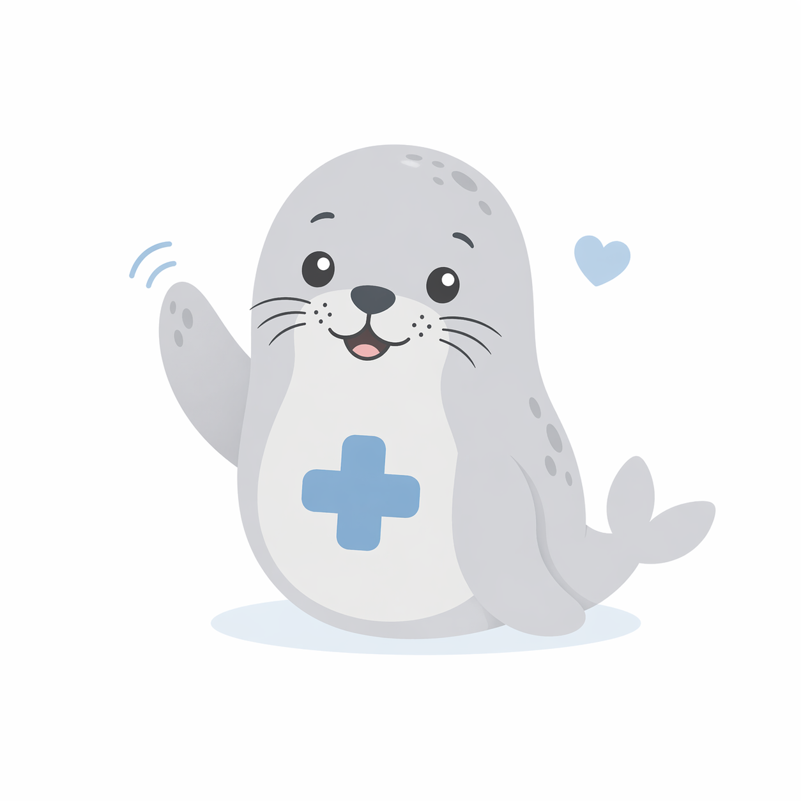

Быстрый результат
Получите предварительный диагноз за 2–3 минуты. Система мгновенно обрабатывает данные и выдаёт рекомендации.
Определите возможные заболевания по симптомам и получите рекомендации по записи к специалисту. Современные алгоритмы машинного обучения для вашего здоровья.

Заглушка под текстовый блок или дополнительные карточки с перечнем симптомов и заболеваний.
Заглушка под описательный блок. Сюда можно вставить карточку с заболеванием, симптомами или советами.
Ещё одна текстовая карточка-заглушка для вашей будущей структуры контента.
2. Программа основана на машинном обучении, что обеспечивает
Получите предварительный диагноз за 2–3 минуты. Система мгновенно обрабатывает данные и выдаёт рекомендации.
Система работает круглосуточно. Проверьте своё здоровье в любое удобное время, не выходя из дома.
Начните диагностику прямо сейчас и получите персональные рекомендации от Sealara.
начать диагностику